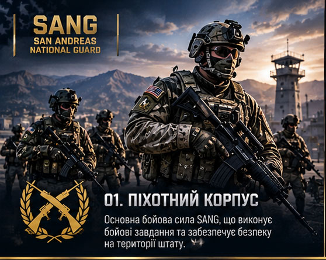

01GROUND
Піхотний корпус
Основний наземний компонент SANG, що забезпечує виконання службових, тактичних та оборонних завдань.
- Охорона військових об'єктів
- Наземні операції та патрулювання
- Тактична підготовка особового складу